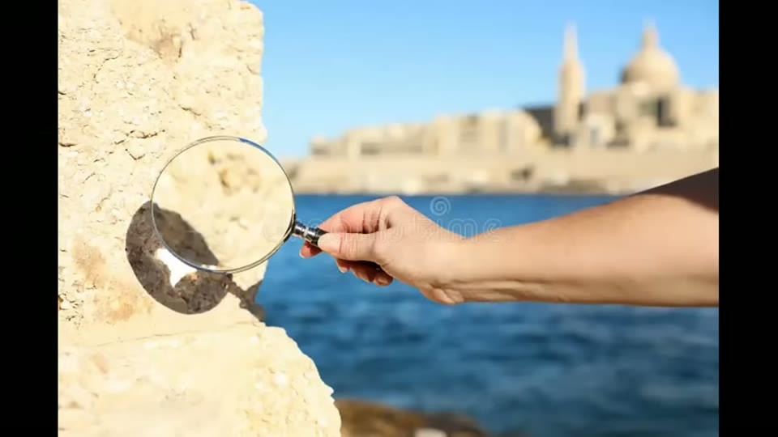

Curious Being
Pyramid Stones: The Scientific Evidence They're Hiding
Tina · 22 min · watch on YouTube · summarised 2026-08-23
The question is whether the Giza blocks were quarried or cast from a concrete-like material, and her framing is that forty years of argument have not settled it for a reason worth examining 00:00–00:35.
Davidovits, and what happened the following year
In 1982 the materials scientist Joseph Davidovits presented to the 3rd International Congress of Egyptologists the proposal that pyramid blocks were not quarried and hauled but cast in place from a limestone-based geopolymer 00:34–01:03. Her account of the reception is that no material rebuttal was offered — Zahi Hawass called the concrete theory "highly stupid and idiotic", and declared the matter closed 01:03–01:29.
Then the claim the whole section turns on. One year later, she says, the Egyptian government introduced a legal ban prohibiting anyone from acquiring even a speck of dust from the pyramid stones for testing 01:29–01:46. Her argument from it is an argument from incentive: if the blocks are natural stone, the fastest and most convincing way to end the debate is to invite material scientists in and publish the results. Banning the test is the more expensive option, and she asks what it buys 01:46–02:16.
One exception, which she returns to at the end: Egyptian researchers were permitted to collect hundreds of mortar samples at multiple pyramids for radiocarbon dating 02:16–02:34. Mortar can be removed. Block fragments cannot.
On the research climate she quotes Linn Hobbs, a materials and nuclear science professor at MIT: "The very idea has been so controversial that you can't get research funding, and it's difficult to get a paper through peer review" 03:07–03:23. The quote's source is on screen.

Where the MIT quotes about funding and peer review come from - a traceable source, shown but not read aloud.
The Diary of Merer
The papyri of Merer, found in 2013 and the oldest inscribed papyrus known, date to Khufu's reign and are routinely presented as the document that ends the argument 03:29–04:20. Her position is that they do not, and that the popular version misreports them.
What the diary records, on her reading, is limestone being quarried at Tura and shipped to Giza. What it does not record, in any entry, is those stones being used to build a pyramid 04:20–04:38. The only construction work explicitly documented is work on a dike near the pool of Khufu, a structure outside the Giza plateau. And Giza is a large site — hundreds of stone structures, causeways, temples, tombs and administrative buildings — so the Tura shipments could have been destined for any of them 04:38–05:11.
Her conclusion is deliberately narrow: the diary proves limestone was quarried and transported, and proves nothing about how a pyramid was built 05:11–05:29.
The fossil objection
The commonest objection to casting is that the blocks are full of fossil shells, natural stone contains fossils, therefore the blocks are natural stone 05:29–05:50.
Her answer is that Giza sits on one of the most fossiliferous limestone formations in the world, so a concrete mix using the local limestone as aggregate would contain exactly the same fossils as quarried stone. Fossils do not distinguish between the two possibilities at all 05:52–06:25.
Then Davidovits' stronger version. In naturally formed limestone the shells settle in orderly horizontal layers over geological time; in the pyramid blocks he reported them in complete disarray, jumbled and haphazardly oriented, as though the material had been mixed and poured 06:25–06:58.

The comparison the disarray argument rests on - orderly natural layering against jumbled pyramid stone.
The Geopolymer Institute is said to have demonstrated the point directly, casting replica limestone blocks from the same local aggregate, complete with randomly oriented embedded fossils, visually indistinguishable from pyramid stone 06:58–07:23. The Institute's own page is on screen while she says it, and describes something narrower than the narration does.

The demonstration that casting reproduces the fossils - and what the demonstration actually was.
The scientific record
This is the section the video exists for 07:23–15:45, and it is the section where the screen is more informative than the narration. Every study is shown as a screenshot, and most of the names she reads aloud are wrong. The forms below are taken from the frames.
1984 — Davidovits, France. X-ray fluorescence and X-ray diffraction. He reported the blocks to be 85–92% limestone aggregate bound with an alkali aluminosilicate material consistent with a geopolymer binder and distinct from quarry stone, along with air bubbles, organic fibres, animal bones and teeth in the matrix — materials that do not occur in naturally formed limestone 07:44–08:30. No citation for this work appears on screen, and the section is illustrated with stock footage.


What the two most-repeated claims in the opening are illustrated with, when there is nothing to photograph.
1990 — Folk and Campbell, USA. Two American researchers examined stone near the northeast corner of the Great Pyramid and declared within minutes that the blocks were clearly natural limestone; the paper is still cited against Davidovits 08:30–08:55. Her point is not the conclusion but what followed. A letter Robert Folk wrote to Davidovits in February 1992 conceded that what he had looked at was the pyramid's natural bedrock core — a layer Mark Lehner had documented in 1983 — and the retraction was never widely publicised 08:55–09:35. The letter is on screen and quoted at length.

The retraction the citing papers omit - and exactly how far it goes.
2004 — Demortier, Belgium. She calls him "De Mulder" throughout this section, and names him correctly only once, in the closing verdict. The bio card she displays is Guy Demortier, emeritus professor of physics at the University of Namur and co-founder of LARN, with his ORCID printed underneath. PIXE, PIGE and NMR analysis of pyramid samples, concluding that the masonry showed multiple lines of evidence consistent with a moulding procedure using ingredients all locally available in the Cairo region, and that the data argued against hewn blocks 09:35–10:09.

The name the narration cannot say, printed on screen with an identifier that makes the work findable.
2006 — Barsoum, Ganguly and Hug. She reads the third author as "Gothari"; the title page on screen gives Microstructural Evidence of Reconstituted Limestone Blocks in the Great Pyramids of Egypt, Journal of the American Ceramic Society 89[12] 3788–3796, by M. W. Barsoum and A. Ganguly of Drexel University with G. Hug of LEM ONERA-CNRS. Scanning and transmission electron microscopy on pyramid limestone, compared against six natural limestone samples from the surrounding area 10:09–10:41.
What they reported had no equivalent in any of the controls: micro-constituents combining silicon with calcium and magnesium in ratios that do not exist in any known natural limestone source in the region; hydrated calcite and dolomite, minerals that do not hydrate in nature; and, most strikingly, submicron silica-based spheres whose presence implies the material had at some point been in a basic solution 10:41–11:19. Their conclusion, quoted: "The sophistication and the endurance of this ancient concrete technology is simply astounding."


The study called the most significant of the modern era, with the citation that makes it retrievable - and a figure of the kind it turns on.
The nanospheres are the video's headline claim. The article she shows attributes them to Barsoum and a graduate student, Aaron Sakulich, and says they were found "in one of the samples" — a qualifier the narration does not carry.

The headline finding, in the wording of the article she is reading from.
2007 — Jana, USA. A counter-study, and she calls him "Gena"; the page on screen is Dipayan Jana, petrographer and president of Construction Materials Consultants. He concluded the casing stones were natural limestone identical to Tura quarry material, and the paper has been cited since as the definitive rebuttal to Barsoum 11:30–11:53.
Her objection is about the sample. Jana's analysis relied partly on the Lauer sample, a historically documented fragment with a known appearance and known dimensions. The authentic sample is 15 mm thick; what Jana received and tested measured 25 mm, and it lacked the signature surface coating that characterises the authentic one. Jana noted the discrepancies three times in his own paper, she says, continued the analysis anyway, declared the sample natural limestone, and published 11:53–12:38.

The measurement the rebuttal to Barsoum is said to fail on - and who supplied the measurement.
2008 — Liritzis and colleagues, Greece. She calls the team "Larisa". The paper on screen is Mineralogical, petrological and radioactivity aspects of some building material from Egyptian Old Kingdom monuments, by I. Liritzis, C. Sideris, A. Vafiadou and J. Mitsis, with its DOI. XRD and XRF analysis, concluding natural stone 12:42–12:57. Her objection is methodological rather than about the result: the paper contains no raw XRD figures, no peak plots, no diffraction patterns and no detailed data tables, so the conclusion cannot be checked, validated, challenged or replicated 12:57–13:30.

The natural-stone study she says cannot be checked, fully identified on screen.
2011 — New Zealand, UK and USA. Multinuclear NMR on casing stones from the Bent Pyramid at Dahshur, finding that they consist of Tura quarry limestone grains cemented with an amorphous calcium-silicate gel formed by human intervention, through the addition of silica possibly from diatomaceous earth sourced in the nearby Fayum 13:30–14:06. Her summary: the Bent Pyramid casing stones are synthetic blocks. The authors are not read aloud; the article header is on screen.


The result she treats as the clearest single finding, and the surface it was taken from.
2012 — Túnyi and El-Hemaly, Slovakia and Egypt. Paleomagnetic reasoning: blocks cast in place should have magnetic moments aligned uniformly north–south, while blocks quarried, transported and randomly rotated during placement should be scattered. Of six sampling locations across Khufu and Khafre, she says three showed the same north–south alignment consistent with in-place casting and two showed orientations consistent with transported stone. Mixed, she grants, but the casting data is present 14:06–14:58.


The magnetic-alignment test, with its citation and the sampling plan the numbers come from.
2021 — Demortier again, Belgium. A follow-up identifying carbon micro-clusters of apparent organic origin in pyramid block samples, occurring alongside sodium-rich clusters in the same locations — a chemical signature she says is completely absent from Egyptian quarry limestone. The elemental distribution of carbon, oxygen, sodium, sulphur, chlorine and calcium differs from quarry limestone in ways consistent with a processed, manufactured material 14:58–15:45.

The most recent result in the chain, and the size range the article itself gives.
The institutional pattern
Stepping back from the individual studies, she reads a pattern 15:45–16:42: material scientists cannot get funding; peer review rejects their papers before the data is evaluated; the sampling ban came in 1983, one year after Davidovits went public, and was tightened in 2010 to criminalise the removal of even mud or pollen; two German researchers who took unauthorised fragments in 2013 were convicted in absentia and sentenced to five years; and Egypt has pursued the return of pyramid samples held in foreign institutions, including a casing stone in the National Museum of Scotland.

The prosecution offered as proof that testing has been criminalised, in the words of the report she shows.
Hobbs again, on the reason: "Too many big egos and too many published work may be riding on the idea that every pyramid block was carved, not cast." And Barsoum on the reception of his own paper: "you would have thought I claimed the pyramids were carved by lasers" 16:42–17:10.
The current Egyptian position, as she gives it, is that future testing should be conducted inside Egypt under Egyptian institutional oversight rather than samples leaving the country — which she reads as placing any future result under the control of the same authority that has spent four decades insisting the answer is settled 17:10–17:43.
Then the asymmetry again, sharpened: hundreds of mortar samples permitted for radiocarbon dating, block fragments a criminal offence. "Why is the mortar less sacred than the stone?" 17:43–18:11.
What she says is at stake
Not academic pride 18:28–19:53. Museums, careers, national identity and one of the world's most lucrative tourism industries are anchored to a specific story: copper tool workers, limestone quarries, sledges, ramps, and the organisational genius of pharaonic Egypt. Hawass is quoted calling the pyramids "the crown jewel of Egyptian civilization", and her line is that the crown does not sit as comfortably on a concrete plant as it does on a royal tomb.
The verdict
She does not claim the case is proven, and says so first 19:53–20:04: "No single study is conclusive. That is the honest answer."
Her argument is cumulative — the disarrayed fossils, air bubbles and anomalous binders, Barsoum's nanoscale silica spheres, Demortier's carbon clusters, the Bent Pyramid NMR, the paleomagnetic data — set against natural-stone studies she says have their own problems: a geologist who examined bedrock and called it a pyramid block, a key sample that grew 10 mm between laboratories, and an XRD paper without XRD data 20:04–20:46.
What the evidence demands, she ends, is not a verdict but more testing: conducted transparently, by independent material scientists, with verified samples and published raw data. That is all the concrete hypothesis has ever asked for, and forty years of refusal has made the silence itself the most interesting data point 20:46–21:21.
What you can check yourself
- Every study is legible on screen, with journal and DOI in five cases. Barsoum, Ganguly and Hug, J. Am. Ceram. Soc. 89[12] 3788–3796 (2006),
10.1111/j.1551-2916.2006.01308.x. Liritzis, Sideris, Vafiadou and Mitsis,10.1016/j.culher.2007.03.009. The Bent Pyramid NMR paper,10.1016/j.matlet.2010.10.035. Túnyi and El-Hemaly,10.1051/epn/2012604. Demortier's 2021 article, Vol. 33 No. 5 (2021). Every one of these can be pulled up and read against what she says about it. - Three quoted sources are identified in frame. The Hobbs quotes come from an MIT News article by David Chandler, 2 April 2008. The German researchers' case is an Archaeology magazine news item of 25 November 2013. The Lauer sample photograph is credited "© J. Davidovits".
- The 2006 abstract states its own claim. It is on screen: micro-constituents with appreciable amounts of silicon combined with calcium and magnesium "in ratios that do not exist in any of the potential limestone sources". Whether the paper's data supports that is a question anyone can take to the paper.
- The paleomagnetic figure is shown, and can be counted. It numbers seven sampling points — three on Khafre, three on Khufu, and one marked "quarry" — with red arrows on three of them. That is a different set of numbers from the narration's; see below.
- The Demortier abstract gives a different figure from the narration. Printed on screen: carbon clusters "of size ranging between 5 µm and 50 µm". Spoken: 5 to 15 micrometres.
- The Geopolymer Institute page can be read in full on the frame. Its own wording is that the material came from a quarry in France, that it was disaggregated with water and mixed with kaolin clay and a geopolymeric binder, and that it was packed into a pyramid-shaped mould. The object photographed is a tabletop model beside a ruler.
- The Bent Pyramid abstract names Tura. The paper she cites as her strongest single result says the casing stones consist of limestone grains from the Tura quarry, cemented. That is checkable against her own argument about the Diary of Merer, which is that Tura shipments to Giza tell us nothing.
- The Merer papyri are published. Whether the diary names a destination, and how the editors read that name, is a question about a printed edition rather than about a lost civilisation.
- The names. Demortier, Hug, Jana, Liritzis, Lauer, Túnyi. Each is printed on screen and each is read aloud differently. Anyone chasing a citation from this video needs the printed form.
What the video does not settle
- The sampling ban cuts both ways, and only one way is examined. If nobody can lawfully remove a fragment, then no analysis of a "pyramid sample" — for casting or against it — has a verifiable chain of custody. The Lauer sample dispute she raises against Jana is exactly that problem: a fragment whose identity is contested between laboratories. She uses it as evidence of one side's carelessness rather than as evidence of what a testing ban does to everybody's data.
- The Lauer discrepancy is documented by a party to the dispute. The image establishing that the authentic sample is 15 mm and Jana's was 25 mm is an annotated photograph credited to Davidovits. Jana's paper is never shown, so his account of the discrepancies he is said to have noted three times is not available from this video.
- Folk's concession is narrower on screen than in the narration. The letter quoted concedes the northeast corner and the lower two courses of the east face — "on the North-East corner, you are correct". The narration generalises this to "Folk and Campbell had not examined the pyramid blocks, they had examined the bedrock". The letter is also quoted inside a document written by the other party to the argument.
- The 2011 NMR study is not independent of the 2006 study. The author list on her own screenshot ends with M. W. Barsoum. The video presents it as a separate line of evidence from a separate team, and never says that the two share an author.
- The fossil comparison is not like for like. Her two panels are captioned "Fossils in nummulitic limestone" and "Fossils in pyramid block". The left is a stock photograph carrying an Adobe Stock watermark, of an unstated location, and the fossils in it are round disc-shaped nummulites; the right shows densely packed elongate shell fragments. They are different fossils in differently coloured rock at different magnifications. The left panel also does not show the orderly horizontal layering the narration describes as the natural condition.
- The replica is not what the narration says it is. The narration has the Geopolymer Institute casting blocks "from the same local aggregate". The page on screen says the limestone came from a quarry in France, and that kaolin clay and a geopolymeric binder were added. A cast object containing fossils demonstrates that fossils survive casting. It does not demonstrate that any pyramid block was cast.
- The nanospheres were reported in one sample. The article she quotes says so. The narration presents them as a finding of the 2006 study; the article attributes them to later work by Barsoum and a graduate student.
- The paleomagnetic numbers do not add up on the video's own figure. Six locations, three north–south, two consistent with transport — that leaves one of the six unaccounted for. The figure displayed numbers seven points including a quarry control, and marks three with arrows. What the unmarked points showed is not stated.
- The venue for the paleomagnetic work is not mentioned. Its DOI prefix and page layout are those of Europhysics News, a membership magazine of the European Physical Society rather than a peer-reviewed journal. That matters here more than it usually would, because the video's complaint against the natural-stone studies is precisely one of methodological rigour.
- The legal claim is never sourced. No statute is named, no text is shown, and the section is illustrated with a stock photograph of a tourist. Whether the 1983 measure is a pyramid-sampling ban or a general antiquities law that happens to date from that year is the whole weight of the argument, and it is not established.
- What the two German researchers took is not stated. The headline she displays reads "Two men accused of stealing artifacts from the Great Pyramid". Whether that is the same act as attempting a materials analysis is left to the viewer.
- The mortar asymmetry has an obvious reading that is not considered. Mortar is the soft material between blocks; taking it does not cut a block face. A conservation rationale is not mentioned and not ruled out, and the argument proceeds as if concealment were the only explanation.
- Jana's 2007 paper is never shown. His firm's web page is displayed instead. Everything said about the paper's contents comes from the narration.
- Davidovits' 1984 analysis has no citation on screen and no venue is named, which leaves the earliest and most-repeated result in the chain the only one that cannot be looked up from this video.
- What casting at this scale would require is not addressed at all — binder production, formwork, water supply, labour. The video argues about what the stone is, not about whether the industry that would have made it is anywhere in evidence.
See also
Great Pyramids' Radiocarbon Dating: An Inconvenient Truth — the mortar samples whose collection she treats here as the revealing exception, and the video she links to at 18:11–18:28.
Giza's Precise Granite Blocks: Proof of Ancient High Technology? — the casting argument applied to granite, resting on the "multiple scientific studies" this video finally names.
The Pyramid Theory That Solves Every Construction Mystery — Davidovits' proposal singled out there as the most testable of the construction hypotheses.
The Forgotten Purpose of the Pyramids' Black and White Casings — the Khufu and Bent Pyramid casings that the 2011 NMR paper is about.
Questioning the Luminescence Dating Result of the Giza Pyramid — a paper in the same journal, Journal of Cultural Heritage, relied on there as her strongest dating evidence and dismissed here as untrustworthy.
What we have not checked
- None of the papers has been read. Every DOI, title, author list, volume number and abstract line quoted above is read off her screenshots. Five of the citations are complete enough to retrieve; none has been retrieved here, and the accounts of what each study found are hers.
- Davidovits' 1984 XRF/XRD work is not identified. No venue, no title, no DOI on screen. The 85–92% aggregate figure, the alkali aluminosilicate binder, and the bones and teeth are as she gives them.
- Jana's 2007 paper has not been located, and the video does not show it. The 15 mm and 25 mm measurements, the missing surface coating and the three noted discrepancies are all from her account and from a photograph credited to the opposing party.
- **The identification of the paleomagnetic venue as Europhysics News is inferred** from the DOI prefix
10.1051/epnand the page layout in frame. It is not stated in the video and has not been confirmed. - The 2021 Demortier article's journal is not established. The frame gives "VOL. 33 NO. 5 (2021)" and the author's affiliation, but no journal name is visible.
- Egypt's 1983 legal instrument has not been identified. It is not named in the video. Nothing here confirms which measure is meant or what it covers.
- The National Museum of Scotland casing stone is an inference. The frame at 16:33–16:42 shows a gloved conservator handling a large pale limestone block against black, with no caption; the identification rests on what the narration says over it, and is marked medium confidence.
- The 1982 congress, the 2010 tightening, the German researchers' five-year sentence and the repatriation requests are as she states them; only the third has a source shown.
- Whether Liritzis and Vafiadou also wrote the 2014 luminescence paper has not been checked. See the note above; it should be settled before either entry is cross-referenced on it.